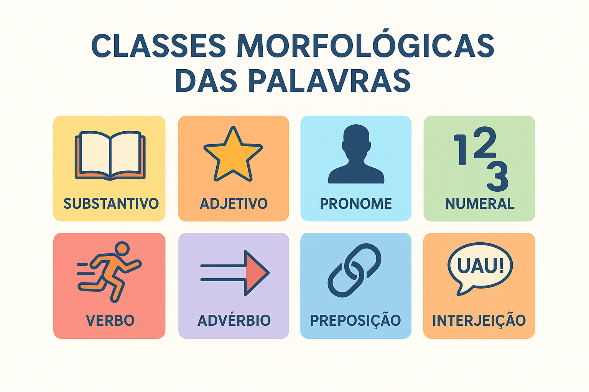

Classes Morfológicas das Palavras: análise e classificação
No sistema da Língua Portuguesa, as palavras não funcionam de maneira anárquica ou desordenada. Cada vocábulo integra um inventário formal e funcional que orienta a maneira como ele se flexiona, com quais elementos pode se combinar e que papel exerce na constituição dos enunciados. O agrupamento desses termos segundo suas características mórficas dá origem às classes morfológicas de palavras (tradicionalmente denominadas classes gramaticais).
Embora o ensino tradicional frequentemente priorize noções puramente semânticas (como "verbo indica ação" ou "substantivo nomeia coisas"), a moderna análise linguística estabelece que a classificação rigorosa de um vocábulo exige a observação prioritária de sua forma mórfica (capacidade de receber desinências de gênero, número, tempo, modo e pessoa) e de suas propriedades distribucionais (o contexto sintático em que o termo pode legitimamente figurar).
Neste guia acadêmico e descritivo, você examinará as dez classes de palavras da Língua Portuguesa sob uma perspectiva estritamente morfológica, compreendendo a separação entre classes abertas e fechadas, os critérios distintivos entre variáveis e invariáveis, o funcionamento dos afixos derivacionais em cada categoria, além de exercícios resolvidos e comentados para fixação.

Critérios científicos de categorização morfológica
Para classificar cientificamente uma palavra, a linguística descritiva articula três critérios fundamentais: o morfológico (a estrutura mórfica interna e as flexões), o sintático (a função relacional desempenhada na frase) e o semântico (o valor nocional ou relacional veiculado). Sob a ótica estritamente morfológica, as palavras dividem-se inicialmente em dois grandes grupos:
Classes Variáveis (Sistemas Flexivos)
Vocábulos dotados de flexibilidade mórfica interna, capazes de receber desinências e sufixos de gênero, número, grau, pessoa, tempo, modo ou aspecto.
Integrantes: Substantivo, Artigo, Adjetivo, Numeral, Pronome e Verbo.
Classes Invariáveis (Morfemas Fixos)
Vocábulos com constituição mórfica fixa e inalterável, insensíveis às exigências de concordância nominal ou verbal da oração.
Integrantes: Advérbio, Preposição, Conjunção e Interjeição.
A primazia da forma na descrição das classes
“A classificação das palavras em classes deve repousar fundamentalmente em critérios de ordem mórfica e funcional, cabendo ao significado uma função subsidiária e confirmatória” (BECHARA, 2019, p. 112). A forma exterior e a flexão determinam a identidade categorial do vocábulo.
As dez classes morfológicas da Língua Portuguesa
A seguir, examinam-se detalhadamente as dez categorias morfológicas que compõem o léxico do português:
1. Substantivo
É a classe lexical nuclear que nomeia seres, entidades reais ou imaginárias, ações substantivadas, qualidades abstraídas, sentimentos, lugares e conceitos. Morfologicamente, funciona como a base de ancoragem da concordância nominal: projeta seus traços de gênero e número sobre os artigos, adjetivos, numerais e pronomes que o circundam.
- Critérios morfológicos: admite flexão de gênero (menino/menina; autor/autora), número (livro/livros; cidadão/cidadãos) e variações de grau sintético via sufixação avaliativa diminutiva ou aumentativa (casinha, casarão);
- Comportamento derivacional: atua como polo gerador e receptor de afixos derivacionais eruditos e populares (ex.: flor → florista, floricultura; pedra → pedregulho; leal → lealdade);
- Exemplos representativos: computador, liberdade, ventania, Amazônia, solidariedade.
2. Artigo
Palavra gramatical que se antepõe obrigatoriamente ao substantivo para determinar o seu alcance referencial no discurso, assinalando se o ser é tomado em sua especificidade conhecida ou em sentido vago e generalizante.
- Critérios morfológicos: palavra essencialmente variável em gênero e número (o, a, os, as; um, uma, uns, umas), apresentando formas que concordam rigorosamente com o substantivo subordinante;
- Substantivação funcional: o artigo possui a capacidade morfológica de substantivar qualquer termo da língua que seja colocado após ele (ex.: “o cantar dos pássaros”, “o porquê da decisão”);
- Exemplos contextuais: “O pesquisador apresentou a tese” (determinado) vs. “Um pesquisador apresentou uma tese” (indeterminado).
3. Adjetivo
Classe modificadora que expressa qualificações, estados, propriedades, origens e aspectos dos substantivos. Do ponto de vista mórfico, o adjetivo não possui gênero e número próprios: ele recebe essas categorias por empréstimo sintático do substantivo ao qual se acopla.
- Critérios morfológicos: varia em gênero (belo/bela; fácil/fácil nos uniformes) e número (azul/azuis; capaz/capazes). Admite flexão de grau comparativo e superlativo sintético (alto → altíssimo; célebre → celebérrimo);
- Produtividade sufixal: forma-se amplamente por derivação sufixal a partir de substantivos e verbos (ex.: amor → amoroso; fragilidade → frágil; navegar → navegável);
- Exemplos representativos: lúcido, transparente, contemporâneo, brasileiro, angustiante.
4. Numeral
Palavra que expressa a quantificação numérica exata dos seres, a ordem em uma sequência posicional, a fração divisionária ou a multiplicação escalar de uma quantidade básica.
- Critérios morfológicos: apresenta flexão de gênero e número em determinadas subclasses (dois/duas; primeiro/primeira/primeiros/primeiras; duplo/dupla), enquanto outros vocábulos mantêm forma rígida (três, dez, cem);
- Subdivisões formais: cardinais (um, dois, cinquenta), ordinais (primeiro, vigésimo), multiplicativos (dobro, triplo) e fracionários (meio, terço);
- Exemplos contextuais: “O terceiro candidato obteve o dobro dos votos no segundo turno.”
5. Pronome
Vocábulo de natureza eminentemente funcional que acompanha o substantivo (pronome adjetivo) ou o substitui integralmente (pronome substantivo), localizando as entidades em relação às três pessoas do discurso.
- Critérios morfológicos: uma das classes de morfologia mais rica e diversificada da língua. Apresenta marcas de pessoa do discurso (1ª, 2ª, 3ª), caso gramatical (reto vs. oblíquo tônico e átono: eu / me / mim / comigo), gênero e número (meu/minha/meus/minhas);
- Subclasses pronominais: pessoais (ele, nós, lhe), possessivos (nosso, sua), demonstrativos (este, aquele), relativos (cujo, o qual, que), indefinidos (alguém, nada, nenhum) e interrogativos (quem, qual);
- Exemplos contextuais: “Este documento comprova que minha proposta atende aos seus anseios.”
6. Verbo
Classe de maior densidade morfológica da língua, caracterizada pela capacidade exclusiva de expressar ações, processos, estados, mudanças e fenômenos naturais integrados ao tempo, ao modo e à pessoa enunciativa.
- Critérios morfológicos: estrutura-se sobre um radical, uma vogal temática que define o paradigma de conjugação (1ª -a-, 2ª -e-, 3ª -i-) e um complexo sistema de desinências modo-temporais (DMT) e número-pessoais (DNP);
- Formas nominais e voz: flexiona-se em infinitivo, gerúndio e particípio, além de manifestar as vozes gramaticais ativa, passiva e reflexiva;
- Exemplos estruturais: cant-á-va-mos (radical + vogal temática + DMT pretérito imperfeito + DNP 1ª do plural).
7. Advérbio
Palavra invariável em gênero e número que se associa ao verbo para assinalar a circunstância em que o fato ocorre, ou a um adjetivo ou outro advérbio para intensificar o seu valor semântico.
- Critérios morfológicos: por definição formal, não recebe desinências nominais de gênero ou número. Admite, todavia, variações de grau comparativo e superlativo (cedo → cedíssimo; longe → longíssimo) e afixos diminutivos de valor expressivo e afetivo no registro coloquial brasileiro (pertinho, agorinha);
- Produtividade sufixal em -mente: forma-se prolificamente pelo acréscimo do sufixo -mente à forma feminina de adjetivos (ex.: rápida → rapidamente; cuidadosa → cuidadosamente);
- Exemplos por circunstância: tempo (ontem, jamais), lugar (ali, além), modo (calmamente, bem), intensidade (muito, bastante), negação (não).
8. Preposição
Morfema gramatical relacional invariável cuja função elementar é estabelecer a dependência sintática entre dois termos oracionais, subordinando o segundo ao primeiro e instaurando entre eles relações lógicas e semânticas.
- Critérios morfológicos: inteiramente invariável. Apresenta grande propensão fonética e morfológica a contrair-se com artigos e pronomes (ex.: de + o = do; em + aquele = naquele; a + a = à por crase);
- Preposições essenciais: a, ante, após, até, com, contra, de, desde, em, entre, para, perante, por, sem, sob, sobre, trás;
- Exemplos contextuais: “Caminhavam com segurança sob a orientação dos preceptores.”
9. Conjunção
Palavra conectiva invariável especializada em ligar orações entre si ou conectar termos equivalentes dentro de uma mesma oração, instaurando valores sintático-semânticos de coordenação ou subordinação.
- Critérios morfológicos: classe estritamente invariável e fechada no idioma;
- Divisão funcional:
- Coordenativas: ligam orações independentes (aditivas: e, nem; adversativas: mas, porém; alternativas: ou; conclusivas: portanto; explicativas: pois);
- Subordinativas: integram a oração dependente à oração principal (causais: porque; condicionais: se, caso; concessivas: embora; conformativas: conforme; temporais: quando; integrantes: que, se).
- Exemplos contextuais: “Embora o prazo fosse exíguo, a equipe concluiu a pesquisa e enviou o relatório.”
10. Interjeição
Palavra-frase invariável que condensa a expressão espontânea de sentimentos, emoções súbitas, sensações viscerais, reações apelativas ou estados psicológicos do enunciador.
- Critérios morfológicos: invariável, autônoma e delimitada por entoação exclamativa. Não estabelece concordância nem subordinação sintática com outros elementos da frase;
- Exemplos por matiz expressivo: espanto (Ah!, Puxa!), dor (Ai!, Ui!), alívio (Ufa!), advertência (Cuidado!, Calma!), aplauso (Bravo!, Viva!);
- Locuções interjetivas: combinações de palavras que atuam como interjeição: Ora bolas!, Meu Deus!, Macacos me mordam!
Quadro sinóptico das classes morfológicas
O quadro a seguir sistematiza as propriedades mórficas, os tipos de flexão admitidos e o papel linguístico de cada uma das dez classes:
| Classe | Variabilidade | Flexões Possíveis | Função Morfopragmática |
|---|---|---|---|
| Substantivo | Variável | Gênero, Número e Grau | Núcleo de designação e base de concordância nominal. |
| Artigo | Variável | Gênero e Número | Determinação ou generalização do substantivo. |
| Adjetivo | Variável | Gênero, Número e Grau | Modificação caracterizadora do substantivo. |
| Numeral | Variável (parcial) | Gênero e Número (em certas subclasses) | Expressão quantitativa, fracionária ou posicional exata. |
| Pronome | Variável | Gênero, Número, Pessoa e Caso | Substituição, referência e indicação no discurso. |
| Verbo | Variável | Tempo, Modo, Número, Pessoa, Voz e Aspecto | Núcleo do predicado e expressão temporalizada de ações/estados. |
| Advérbio | Invariável | Grau (em contextos específicos) | Modificação circunstancial de verbos, adjetivos e advérbios. |
| Preposição | Invariável | Não admite flexão | Subordinação e conexão relacional entre termos oracionais. |
| Conjunção | Invariável | Não admite flexão | Conexão lógico-sintática entre orações ou termos paralelos. |
| Interjeição | Invariável | Não admite flexão | Exteriorização instantânea de emoções e reações afetivas. |
Atenção ao fenômeno da derivação imprópria (conversão)
Uma mesma base lexical pode migrar de uma classe morfológica para outra conforme o ambiente sintático. Em “O jantar foi servido”, o verbo jantar converteu-se em substantivo pelo acoplamento do artigo definido. Em “Ele falou baixo”, o adjetivo baixo atua como advérbio modal invariável. A identificação de classe exige sempre a análise do contexto oracional concreto.
Roteiro de identificação morfológica em cinco passos
Como determinar com exatidão a classe de uma palavra
- Teste de flexibilidade de gênero e número: observe se a palavra pode ser passada para o feminino ou plural para concordar com outro termo (indício de substantivo, adjetivo, pronome ou numeral);
- Teste de conjugação temporal: verifique se o vocábulo aceita desinências de passado, presente ou futuro (critério incontestável da classe dos verbos);
- Teste de invariabilidade estrita: se o termo mantém sua forma rígida mesmo quando os nomes ao redor vão para o plural ou feminino, trata-se de advérbio, preposição ou conjunção;
- Análise de vínculo sintático: examine a qual elemento a palavra se subordina: se modifica um substantivo, é adjetivo ou determinante; se modifica um verbo ou adjetivo, é advérbio; se liga dois termos, é preposição; se articula orações, é conjunção;
- Exame de afixos formadores: identifique a presença de sufixos derivacionais típicos, como -dade (substantivo abstrato), -mente (advérbio modal) ou -izar (verbo).
Exercícios de análise morfológica comentados
Exercício de classificação contextual
Classifique morfológica e formalmente cada um dos vocábulos destacados nos enunciados abaixo:
- Casa: “Compraram uma casa espaçosa no interior.”
- Felizmente: “Felizmente, os documentos foram recuperados a tempo.”
- Onde: “Esta é a cidade onde nasci.”
- Três: “Três especialistas avaliaram o parecer técnico.”
- Cantar: “Eles começaram a cantar logo ao amanhecer.”
- Porque: “Não viajaram porque a tempestade interditou as vias.”
- Ai!: “Ai! Que pancada forte no joelho!”
- Nossas: “Nossas diretrizes foram acolhidas por todos.”
Ver gabarito comentado detalhado
- Substantivo: núcleo que nomeia um objeto material concreto, variável em número (casas) e determinado pelo artigo indefinido uma;
- Advérbio: palavra invariável formada pelo adjetivo feliz acrescido do sufixo derivacional -mente, atuando como modificador sentencial circunstancial;
- Pronome relativo: termo que substitui o antecedente substantivo cidade, exercendo função conectiva e indicando referência espacial locativa;
- Numeral cardinal: palavra adjetiva que expressa quantidade matemática definida e exata, acompanhando o substantivo especialistas;
- Verbo: forma nominal do infinitivo pertencente à 1ª conjugação (radical cant- + vogal temática -a- + desinência de infinitivo -r), indicando ação processual;
- Conjunção subordinativa causal: conectivo invariável que liga a oração subordinada à oração principal, introduzindo a causa do fato enunciado;
- Interjeição: vocábulo invariável e autônomo que exprime de forma súbita e enfática a sensação física de dor;
- Pronome possessivo: pronome adjetivo que acompanha o substantivo feminino plural diretrizes, flexionando-se em gênero, número e remetendo à 1ª pessoa do discurso (nós).
Resumo das Classes Morfológicas
- A análise morfológica classifica as palavras com foco prioritário em sua constituição interna e comportamento flexivo;
- O português possui dez classes: substantivo, artigo, adjetivo, numeral, pronome, verbo, advérbio, preposição, conjunção e interjeição;
- As classes dividem-se formalmente entre seis variáveis (sujeitas a flexão) e quatro invariáveis (de forma fixa);
- O substantivo atua como centro da concordância nominal e o verbo como centro da concordância oracional;
- A derivação imprópria comprova que a classe de uma palavra decorre sempre de sua inserção no enunciado;
- Dominar as classes de palavras é a base indispensável para compreender a regência, a concordância e a análise sintática oracional.
Perguntas frequentes sobre as classes de palavras
Qual a diferença entre análise morfológica e análise sintática?
A análise morfológica identifica a palavra de maneira isolada ou quanto à sua classe e flexão (por exemplo, classificar livro como substantivo masculino singular). A análise sintática estuda a relação que essa palavra estabelece com outros termos dentro de uma oração específica (por exemplo, reconhecer o livro como sujeito ou objeto direto de um verbo).
O que são classes de palavras abertas e fechadas?
Classes abertas são aquelas que recebem novos vocábulos continuamente pela criatividade dos falantes e inovações culturais (substantivos, adjetivos, verbos e advérbios em -mente). Classes fechadas possuem um inventário fixo e delimitado no idioma, raramente admitindo novos termos (artigos, pronomes, preposições e conjunções).
O advérbio pode sofrer algum tipo de flexão?
Embora seja rigorosamente invariável quanto a gênero e número, a gramática reconhece que os advérbios admitem variação sintética de grau superlativo (como pertíssimo, cedíssimo) e formas diminutivas no português falado brasileiro (cedinho, pertinho).
Como diferenciar uma preposição de uma conjunção?
A preposição estabelece ligação subordinante entre palavras ou termos dentro de uma oração (ex.: “gosto de café”). A conjunção é especializada em articular orações inteiras ou termos que desempenham a mesma função sintática em paralelo (ex.: “estudei porque queria passar”).
Uma mesma palavra pode pertencer a classes gramaticais diferentes?
Sim. Isso ocorre com frequência no português por meio da derivação imprópria ou conversão lexical. A palavra segundo, por exemplo, pode ser numeral (“segundo lugar”), substantivo (“espere um segundo”) ou conjunção conformativa (“segundo afirmou o relator”).
Considerações finais
As classes morfológicas não constituem compartimentos estanques ou rótulos inertes da gramática tradicional. Elas revelam a notável engenharia com que a Língua Portuguesa distribui os papéis entre os vocábulos: algumas classes foram estruturadas para nomear e qualificar o mundo exterior, outras para expressar a dinâmica do tempo e da ação, e outras para tecer os elos lógicos que transformam fragmentos léxicos dispersos em discursos inteligíveis.
O domínio sólido dos critérios formais e contextuais de classificação liberta o leitor de ambiguidades interpretativas e capacita o redator a manipular a estrutura da linguagem com plena consciência estilística e rigor normativo, pavimentando com segurança os estudos subsequentes sobre flexão, processos de formação e relações sintáticas.
Conteúdos relacionados
- Introdução à Morfologia: o estudo da forma das palavras
- Estrutura e Formação das Palavras: morfemas, radical, afixos e desinências
- Morfologia: Estrutura, Formação e Classes de Palavras — Índice Geral
- Flexão das Palavras: gênero, número, grau, tempo, modo, pessoa e aspecto
- Processos de Formação de Palavras: derivação, composição e outros
- Morfologia Estrutural: a estrutura das palavras e o estudo dos morfemas
- Famílias Lexicais e Relações Morfológicas
Referências
- AZEREDO, José Carlos de. Gramática Houaiss da Língua Portuguesa. 4. ed. São Paulo: Parábola Editorial, 2021.
- BECHARA, Evanildo. Moderna Gramática Portuguesa. 39. ed. Rio de Janeiro: Nova Fronteira, 2019.
- CUNHA, Celso; CINTRA, Lindley. Nova Gramática do Português Contemporâneo. 5. ed. Rio de Janeiro: Lexikon, 2008.
- MATTOSO CÂMARA JR., Joaquim. Estrutura da Língua Portuguesa. 54. ed. Petrópolis: Vozes, 2008.
- ROCHA LIMA, Carlos Henrique da. Gramática Normativa da Língua Portuguesa. 46. ed. São Paulo: José Olympio, 2000.
- SAUSSURE, Ferdinand de. Curso de Linguística Geral. 28. ed. São Paulo: Cultrix, 2012.
Explore outros conteúdos
Continue seus estudos acessando outras seções do site Mestre Kira: